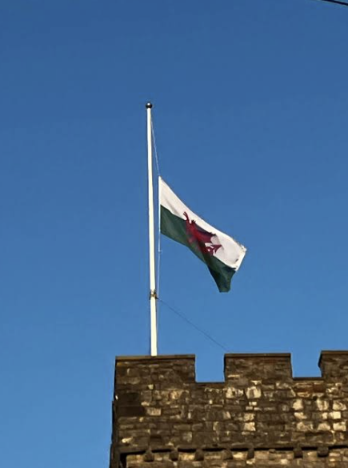

I had it all planned, months in advance as usual, seven nights at the Bois Soleil, 14th to 21st June, close to Ollone sur Mer, on the west coast of France of course, half way down, north of Bordeaux. I've been here before, really nice pool and a bar to sit at for that early evening pint. What else do you need?
What I didn't plan, was the devastating news that my best friend John would suddenly pass away. He's only the same age as me for God's sake. It was 4th June 2023. John's brother Ricky phoned me while I was in work on nights. At first I didn't believe him, of course I believed him, but I just couldn't believe what he was telling me.

John had been like a brother to me, when he still lived local, we did everything together, at one point even our girlfriends were best friends. We would drink too much together, stagger home together, fight half the town together, eat chinese takeaway together, even get arrested together, although they kept us apart in our cells lol.
He moved north, to Leyland, his mother had moved there a couple of years before and when she got ill he moved to be with her, they fell out of course, but he stayed, why? Because he'd met his life partner Michele, they got married, I was John's best man, my best man speech was awful. But that didn't matter, I'd handed over the responsibility of looking after him to Michele, and she did a good job of it.
The visits became less frequent, but we stayed in touch, usually to complain about this or that to each other.
A quick and unexpected detour north
In the week before I set off for France, I travelled to Leyland to pay my respects and see him one last time, he was laid out in his coffin, wearing a suit...with flip flops. Sunglasses on his face and a can of lager by his side. It was something I had never done before, but I was very glad that I did. It gave me a little bit of private time to reflect on his life, our life together, shed a couple of tears, and think about everything he had achieved.
After that I rode home, my heart heavy with grief and my mind full of memories. Packed my bags and headed off to France, hoping to find some solace in the sun and the sea.
My holiday in France
I'd booked the Newhaven to Dieppe ferry, not the most economic route mileage wise but cheap (you might notice a theme developing soon).
The best bit about that route is that there is a McDonalds within a mile of the ferry port...both ends.
What bike was I on? My Suzuki V-Strom 1050 I think, yes, just checked the ticket, definitely the V-Strom. Mile muncher extraodinaire, kitted out with full pannier and topbox set, so plenty of room for all my stuff, well not quite, I still had to bungy some other things to my rear seat.
Hotel booked at the French end, a F1 at Saint Etienne Du Rouvray. Isn't Etienne French for Stephen? That's about the only thing I remember from school French lessons some 40 years ago.
And then the trip to the site the following day, nice and relaxed, just how I like it.
Quickly unpacked and settled in, first walk in progress...
I cut the holiday short so I could get back to say goodbye to John, both Eurocamp and DFDS Ferries couldn't have been more helpful. Both making the rebooking process seamless. Especially the lady at Eurocamp.
The long journey home
19th June 2023
A couple of days earlier than planned, I started my journey back to Leyland for John's funeral. I didn't go home first, there wasn't time; I rode straight to Leyland and stayed overnight at the Ramada Hotel at Charnock Richard services before going to the funeral the following day.
My wife and parents were there too, Sharon had driven them up to the hotel the night before John's funeral, and so the next morning we all travelled together to John's funeral at the crematorium.
I did my duty as one of the pallbearers, carrying John on his final journey. Just like he used to do for me on the way back from the pub, although under very different circumstances.